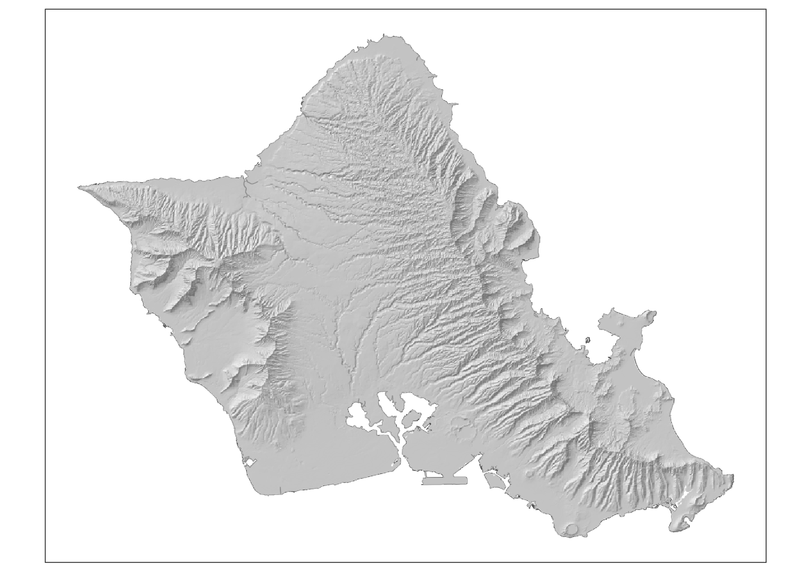
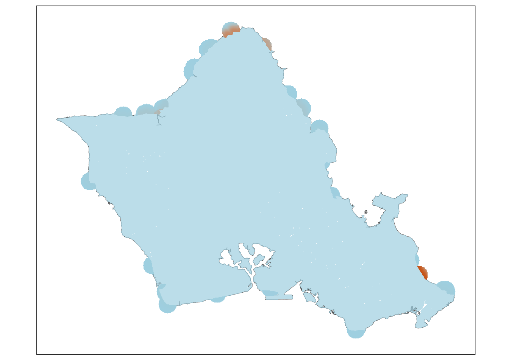
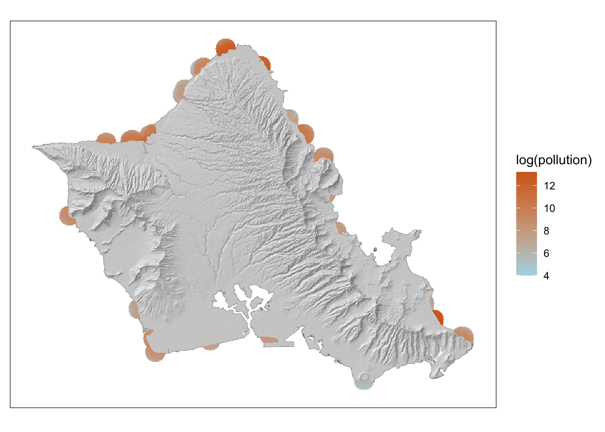
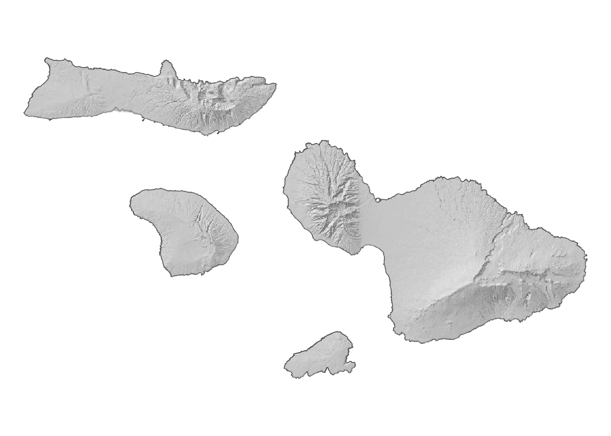

Designing a streamlined workflow for publication-ready cartography in R
Author
Madeline Berger
Published
July 6, 2025
Creating a cartography workflow
Having spent my entire data science career thus far mainly using open-source tools, I am forever looking for ways to prove that anything you can do in ESRI (ArcPro) you can do in R or Python. One big challenge in this area cartography - generally speaking, cartography is much easier in a point-and-click interface with built in basemaps and easy to manipulate layouts.
However, that doesn’t mean you cannot use some simple organizational tricks to build a clean, flexible workflow in R to make publication-ready maps in R. While they may not be QUITE as customizable as using an ArcMap layout, ggplot and tmap have an extraordinary array of options to customize maps. And even better, working in a scripting environment makes it super easy to standardize a mapping aesthetic across all figures, and therefore across all collaborators, a win for open and reproducible science.
The trick is to create a separate R script with your basemap code, so that you can source it in any other script and have a ready-to-go basemap on which you can layer on other data. I usually organize my spatial code repositories like so:
Below I’ll create my go-to basemap for some of my work based in Hawai’i. The original 3D grey design is the brain child of my colleague Joey Lecky at NOAA. I’ll show how I recreated it using ggplot and tmap. I’ll also show how you can add inset maps with AOI footprints to finalize figures in tmap
Tools and libraries used
Wrangling: tidyverse
Geospatial: terra, sf, ggplot, ggspatial
Mapping: tmap, ggplot
Code
Elegant 3D Basemaps using ggplot
This map has just two layers: terrain from a digital elevation model (DEM) and outlines. I find that for my work, which is mostly focused on displaying data in near shore coast area, visualizing the land areas in a simple way is most effective.
Data Prep
Code
# read in dems and convert to data frameshi_dem <-rast(file.path(basemap_dir,"data/dem_hi_smaller.tif"))oahu_dem <-rast(file.path(basemap_dir,"data/dem_oahu_smaller.tif"))mauinui_dem <-rast(file.path(basemap_dir,"data/dem_mauinui_smaller.tif"))kauai_dem <-rast(file.path(basemap_dir,"data/dem_kauai_smaller.tif"))hi_dem_df <- terra::as.data.frame(hi_dem, xy =TRUE,na.rm =TRUE)colnames(hi_dem_df)[3] <-"elevation"oahu_dem_df <- terra::as.data.frame(oahu_dem, xy =TRUE,na.rm =TRUE)colnames(oahu_dem_df)[3] <-"elevation"mauinui_dem_df <- terra::as.data.frame(mauinui_dem, xy =TRUE,na.rm =TRUE)colnames(mauinui_dem_df)[3] <-"elevation"kauai_dem_df <- terra::as.data.frame(kauai_dem, xy =TRUE,na.rm =TRUE)colnames(kauai_dem_df)[3] <-"elevation"# read in coastlines and separate by islandscoastlines <-read_sf(file.path(basemap_dir,"data/shoreline_CorrectedInlets_2022-23.shp")) %>%st_transform(., crs =crs(hi_dem))hi_coast <-filter(coastlines, Island =="Hawaii")oahu_coast <-filter(coastlines, Island =="Oahu")mauinui_coast <-filter(coastlines, Island %in%c("Maui","Molokai","Lanai","Kahoolawe"))kauai_coast <-filter(coastlines, Island =="Kauai")
Build the baseplot
Code
oahu_with_dem <-ggplot()+geom_sf(data = oahu_coast, fill ="white", color ="#696969", size =0.3)+geom_raster(data = oahu_dem_df, aes(x = x, y = y, fill = elevation), alpha =0.7)+scale_fill_gradientn(colours=c("#454545", "#e9e9e9"))+guides(fill ="none")+coord_sf()+theme_bw()+theme(plot.title =element_text(hjust =0.5))+theme(panel.grid.major =element_blank(), panel.grid.minor =element_blank(),panel.background =element_blank())+theme(axis.text.x =element_blank(), axis.text.y =element_blank())+theme(axis.title.x =element_blank(), axis.title.y =element_blank())+theme(axis.ticks =element_blank())oahu_with_dem

We can add on the data we want to display, for example, this layer depicting near shore areas we estimate are most impacted by runoff from injection wells (a method for disposing of grey water and sewage) on Oahu:
Code
# read in sewage layer and make sure its the right crsoahu_iw <-rast(file.path(basemap_dir,"data/Oahu_IW_eff.tif"))crs(oahu_iw) ==crs(oahu_dem) # true
[1] TRUE
Code
# need to convert sewage layer to xyoahu_iw_df <- terra::as.data.frame(oahu_iw, xy =TRUE,na.rm =TRUE)colnames(oahu_iw_df)[3] <-"pollution"oahu_IW_gg <- oahu_with_dem+geom_raster(data = oahu_iw_df, aes(x = x, y = y, fill = pollution))+scale_fill_gradientn(colors=c("lightblue", "chocolate"))oahu_IW_gg

This doesn’t look great - unfortunately ggplot has a hard time plotting two layers with two different color scales so the more recent one has written over the 3D basemap. The best solution I’ve found is to use ggnewscale, a cool add-on package.
Code
library(ggnewscale)oahu_IW_gg <- oahu_with_dem+new_scale_fill()+geom_raster(data = oahu_iw_df, aes(x = x, y = y, fill =log(pollution)))+scale_fill_gradientn(colors=c("lightblue", "chocolate"))oahu_IW_gg

Elegant 3D Basemaps using tmap
tmap has fairly different syntax than ggplot, but I find it very intuitive and closer to how you might think about it in GIS software - you add a layer using tm_shape, and then add the layer style using tm_polygons or tm_raster, depending on if you are working with a raster or polygon. Unlike ggplot, we don’t have to convert rasters to a xy dataframe:
We can see here the default raster colors are orange / brown, and that tmap is treating the dem as categorial. We need to specify a grey scale palette and a continous stertch. If you are used to ggplot for visualization color scales in tmap can be a bit less intuitive but its still very easy. I find it easiest to define a palette outside the map code, and then reference it.
You can also use a built in palette from tmap by running tmaptools::palette_explorer() in your console, which will open a cool shiny app that helps you build a palette that best fits your data (note, you do need to install shinyjs).
Lastly, I added some layout specifications at the bottom to remove the legend and the frame. I find tmap much easier to add or take away small details like these, which is why I tend to use it for publication-ready maps.
Code
dem_pal <-c("#454545", "#e9e9e9")mauinui_with_dem <- tmap::tm_shape(mauinui_coast)+tm_polygons(col ="white",border.col ="#696969",border.lwd =0.3 )+tm_shape(mauinui_dem)+tm_raster(alpha =0.7,#palette = "Greys" # built in tmap palettepalette = dem_pal,style ="cont"# smooths it out a bit more )+tm_layout(legend.show = F, # remove legendframe = F # remove frame )mauinui_with_dem

Adding inset maps and other annotations in tmap
Other basemap resources
References
Code
citation("ggnewscale")
To cite package 'ggnewscale' in publications use:
Campitelli E (2025). _ggnewscale: Multiple Fill and Colour Scales in
'ggplot2'_. R package version 0.5.2,
<https://CRAN.R-project.org/package=ggnewscale>.
A BibTeX entry for LaTeX users is
@Manual{,
title = {ggnewscale: Multiple Fill and Colour Scales in 'ggplot2'},
author = {Elio Campitelli},
year = {2025},
note = {R package version 0.5.2},
url = {https://CRAN.R-project.org/package=ggnewscale},
}